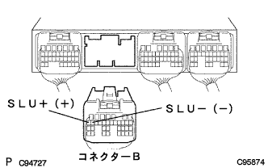

DTC P1755/68 L/U制御リニアSOL系統 |
| DTC No. | DTC検出条件
| 点検部位 |
|---|---|---|
| P1755/68 |
|
|
| 手順1 | トランスミッション ワイヤ単体点検（SLU） |
トランスミツシヨンワイヤのコネクタを切り離す。
 |
トヨタエレクトリカルテスターを使用して、4(SLU+)←→9(SLU-)端子間の抵抗を測定する。
|
| ||||
| OK | |
| 手順2 | ワイヤハーネスおよびコネクター点検（トランスミッションワイヤ-エンジンコントロールコンピユータ） |
トランスミツシヨンワイヤのコネクターを接続し、エンジンコントロールコンピユータのコネクタBを切り離す。
|  |
トヨタエレクトリカルテスターを使用して、B19(SLU+)←→B18(SLU-)端子間の抵抗を測定する。
端子配列は参照
|
| ||||
| OK | ||
| ||
| 手順3 | ロックアップ コントロールソレノイド単体点検（SLU） |
トヨタエレクトリカルテスターを使用して、端子間の抵抗を測定する。
|
| ||||
| OK | ||
| ||